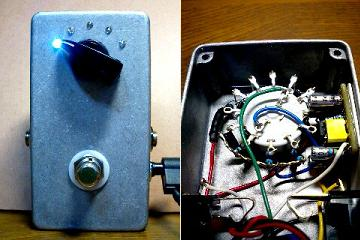
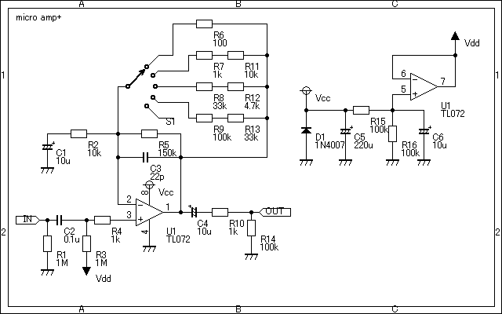
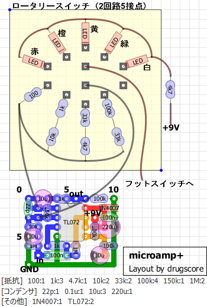
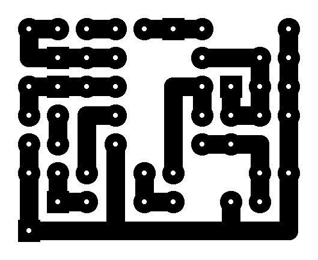
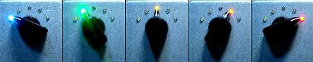

MXR micro amp+ その2
2009年05月05日 カテゴリー：自作エフェクター（アナログ）

以前作ったmicro ampは知り合いにプレゼントしたので、自分用に1個作っておこうと思いました。ただ普通に作っても面白くないので、ロータリースイッチでゲインを切り替えるようにしてみました。
▽回路図

原音を変化させないクリーンブースター（のはず）です。スイッチを回すと0dB（音量そのまま）～+24dBまで6dBずつ音量があがります。ロータリースイッチはショート型がよかったんですが、手持ちがノンショート型だったので切り替え時にノイズが出ます。バイパスしてから切り替えればよいのでまぁ問題はないです。デュアルオペアンプを使いたかったので余ったオペアンプをバイアスに使っています。効果のほどはよくわかりませんが…
▽レイアウト

▽PCB（横27.9mm縦22.9mm）

ロータリースイッチがケース内の場所をとっているせいで基板を小さくしなければならず、8穴×10穴につめこんでいます。
2回路のスイッチを利用し、ゲインとともにLEDが切り替わるようにしています（下写真）。

白（0dB）→緑（+6dB）→黄（+12dB）→橙（+18dB）→赤（+24dB）
ケースは手抜きで塗装してないのでシンプルな外見ですが、LEDの切り替えが楽しくて結構気に入ってます。
---2015年1月5日追記---
ロータリースイッチをレイアウト画像に追加しました。ロータリースイッチは秋月電子で買った2回路6接点のノンショートタイプです。ネジを取ってストッパーを入れることで接点数を変更できます。
（2016年11月9日部品リスト・PCB追加）